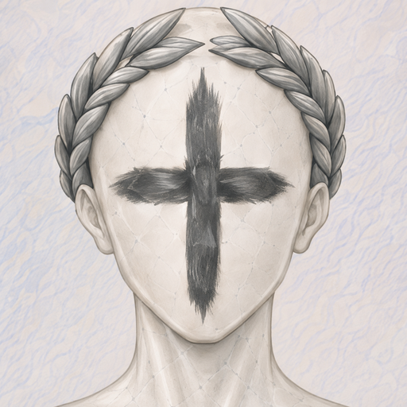

Prism Rows
Головоломка про цвет, связанные фигуры, продуманные ряды, эффекты GEM и развивающиеся игровые режимы.

Независимый разработчик
Игры, моды и официальные ссылки на проекты — в одном месте.
Об авторе
TraditionalDimension — независимый разработчик игр, модов и игровых экспериментов. Здесь собраны официальные страницы проектов, репозитории, загрузки и профили.
Проекты
Головоломка про цвет, связанные фигуры, продуманные ряды, эффекты GEM и развивающиеся игровые режимы.
Большой контентный мод для Balatro с новыми Джокерами, механиками, испытаниями и системами, призванными органично дополнять оригинальную игру.
Профили
Поддержать разработчика
Если вы хотите поддержать будущие проекты и дальнейшую разработку, доступные способы собраны здесь. Поддержка полностью добровольна.